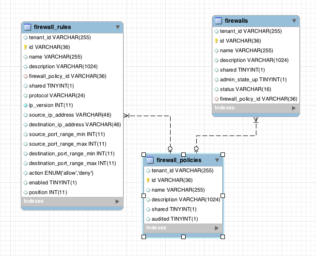

FWaas(防火墙即服务)是基于neutron组件实现的L4-L7层的服务，目前的实现是社区提供的参考实现，离商用还是有很大一段距离的，不过我们可以大致学习参考下。
network-node上的操作
创建配置文件fwaas_driver.ini，配置如下:
[fwaas]
driver = neutron.services.firewall.drivers.linux.iptables_fwaas.IptablesFwaasDriver
enabled = True
重启l3-agent服务:
/usr/bin/python /usr/bin/neutron-l3-agent \
--config-file=/etc/neutron/neutron.conf \
--config-file=/etc/neutron/l3_agent.ini \
--config-file /etc/neutron/fwaas_driver.ini \
--log-file=/var/log/neutron/l3-agent.log
重启l3-agent
controller-node上的操作
修改neutron.conf，添加一个service_plugins:
#除了router外还需要添加firewall
service_plugins = router,firewall
重启neutron-server
修改horizon的local_setting, enable_firewall为True:
OPENSTACK_NEUTRON_NETWORK = {
'enable_lb': True,
'enable_firewall': True,
'enable_quotas': True,
'enable_vpn': True,
'profile_support': None,
'profile_support': 'cisco',
}
重启horizon
FirewallRule
我们所说的防火墙规则,定义了包过滤所需的信息和匹配后的动作
FirewallPolicy
由若干个FirewallRule组成,它被作为模板来创建Firewall
Firewall
系统最终 要实现的防火墙
对象关系模型如下:
FWaas作用在三层的Router上的Iptables，所以你如果要让防火墙生效，你的网络必须有网关，而且要有和网关连接的Router。
我们的网络情况如下:
Ext-Net 192.168.1.0/24, 192.168.1.1
Sub-Net 20.20.20.0/24, 20.20.20.1
Router 192.168.1.200–20.20.20.1
Router对应的namespace如下:
1: lo: <LOOPBACK,UP,LOWER_UP> mtu 65536 qdisc noqueue state UNKNOWN
inet 127.0.0.1/8 scope host lo
2: qg-e711d379-87: <BROADCAST,MULTICAST,UP,LOWER_UP> mtu 1500 qdisc pfifo_fast state UP qlen 1000
inet 192.168.1.200/24 brd 192.168.1.255 scope global qg-e711d379-87
43: qr-a04bb9f3-a9: <BROADCAST,UP,LOWER_UP> mtu 1500 qdisc noqueue state UNKNOWN
inet 20.20.20.1/24 brd 20.20.20.255 scope global qr-a04bb9f3-a9
那么当你创建FW时候，你会在Router的namespace上看到如下IPTables规则:
-A neutron-l3-agent-FORWARD -o qr-+ -j neutron-l3-agent-iv443916a08
-A neutron-l3-agent-FORWARD -i qr-+ -j neutron-l3-agent-ov443916a08
-A neutron-l3-agent-FORWARD -o qr-+ -j neutron-l3-agent-fwaas-defau
-A neutron-l3-agent-FORWARD -i qr-+ -j neutron-l3-agent-fwaas-defau
-A neutron-l3-agent-INPUT -d 127.0.0.1/32 -p tcp -m tcp --dport 9697 -j ACCEPT
-A neutron-l3-agent-fwaas-defau -j DROP
-A neutron-l3-agent-iv443916a08 -m state --state INVALID -j DROP
-A neutron-l3-agent-iv443916a08 -m state --state RELATED,ESTABLISHED -j ACCEPT
-A neutron-l3-agent-ov443916a08 -m state --state INVALID -j DROP
-A neutron-l3-agent-ov443916a08 -m state --state RELATED,ESTABLISHED -j ACCEPT
具体的就是在每个Router的interface设备qr{xxx}装上入向和出向两个IPTables规则链， 在每个链上都有相应的IPTables规则来实现防火墙的规则，neutron-l3-agent-iv443916a08和neutron-l3-agent-ov443916a08就是这两个规则链，neutron-l3-agent-fwaas-defau是默认规则链，可以看出默认情况他会Drop所有进出访问。
当我在horizon上增加一条可以对20.20.20.0/24可访问tcp 22端口的规则，那么IPTables会增加如下记录:
-A neutron-l3-agent-iv443916a08 -d 20.20.20.0/24 -p tcp -m tcp --dport 22 -j ACCEPT
-A neutron-l3-agent-ov443916a08 -d 20.20.20.0/24 -p tcp -m tcp --dport 22 -j ACCEPT
看！就这么简单....
安全组由L2 Agent来实现,也就是说L2 Agent,比如neutron_openvswitch_agent和 neutron_linuxbridge_agent,会将安全组规则转换成IPTables规则,而且一般发生在所有计算节点上。
防火墙由L3 Agent来实现,它的规则会在租户的Router所在的L3 Agent节点上转化 成IPTables规则。
防火墙保护只能作用于跨网段的网络流量,而安全组则可以作用于任何进出虚拟机的流量。
防火墙作为高级网络服务,将被用于服务链中,而安全组则不能。在Neutron中同时部署防火墙和安全组可以达到双重防护。
外部恶意访问可以被防火墙过滤掉,避免了计算节点的安全组去处理恶意访问所造成的资源损失。
即使防火墙被突破,安全组作为下一到防线还可以保护虚拟机。最重要的是,安全组可以过滤掉来自内部的恶意访问。